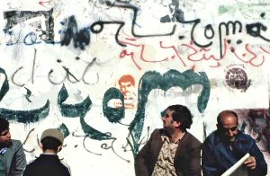

Neveshtan Bar Shahr
Writing On the City

Keywan KarimiIR 2016 – 60 min – Farsi
B: Keywan Karimi – DOP: Arasto
Madahi Givi – E: Farahnaz Sharifi
S: Erfan Ebrahimi – P: Key Film
D: Keywan Karimi
The Iranian
filmmaker tells the story of graffiti in Teheran, from the 1979
revolution that led to the fall of the Shah to 2008’s Green
Revolution.
Graffiti have historically announced the main events that have
taken
place in Teheran. These messages have extended like the walls
built in
the city for the past 200 years. However, the concepts and
intentions
of the graffiti have frequently reflected a distorted mirror of
Iranian
reality. Kurdish-Iranian filmmaker Keywan Karimi’s eye goes beyond
the
historical-political account of the evolution of Iranian society
proposed
by the archive footage and the images shot by Karimi himself. The
film raises universal debates that time has turned into an
implacable
metaphor for its director’s resistance. (MM/Film Festival de
Buenos Aires)
To Keywan Karimi ;
The wall is a mirror | A mirror of the house, of the city, of the
world | Reflections of every shape and form stream by it as
clouds do in the sky | We have learned to go through the
mirror so what was closed will open up | The freedom of the
walls breaks down the prison walls | When reality is unveiled,
dreams become reality | Under the clothing of creeds and of
ideas, what is lived is always bare | Then nothing more conceals
a human being from himself | Someday the walls will have the
transparency of our desires.
Raoul Vaneigem, Situationist
wednesday 11 oct 6.30 p.m. werkstattkino
Keywan Karimi * in 1985, Karimi is an Iranian filmmaker of Kurdish origin. His short films, such as Broken Border (2012) and The Adventures of a Married Couple (2013), were presented in numerous international film festivals. Because of his documentary Writing on the City (2015), focusing on the graffiti of Tehran walls from the 1979 Islamic Revolution to the 2009 re-election of Mohamoud Ahmadinejad, Karimi was arrested and held in isolation for two weeks in December 2013. In October 2015, he was condemned to six years in prison and 223 lashes for “offending Islamic sacredness.” In February 2016, the appeal judgment confirmed all convictions but reduced the prison sentence to one year imprisonment and kept the 223 lashes.
Films Marze Shekaste 2012 – Zan va shohar Karegar 2013 – Drum 2016